Префектура Сидзуока · Хамамацу · сладости
SWEETS BANK в Хамамацу: кондитерская, кафе и банк под столом в тринадцать раз больше обычного
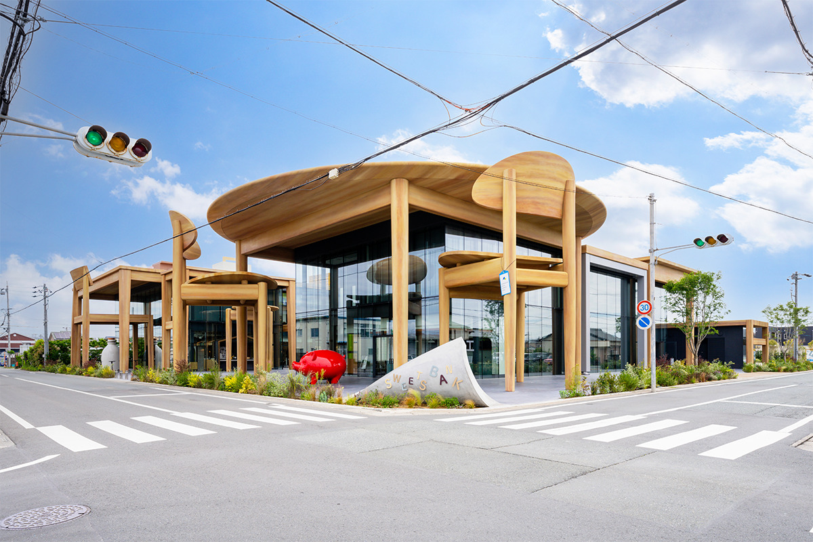
Кондитерский дом Shunkado из Хамамацу знает вся Япония благодаря печенью «Унаги-пай». Его комплекс SWEETS BANK устроен так, будто вы стали ростом с ладонь: стол и стулья здесь примерно в 13 раз больше настоящих, а рядом стоит огромный бумажный пакет «Унаги-пай».
Идея
Праздник за семейным столом
Хамамацу лежит на западе префектуры Сидзуока, и самый известный его сувенир это печенье «Унаги-пай» от Shunkado. Семейный круг всегда был главной идеей марки, и к 130-летию компании она построила комплекс SWEETS BANK. К семейному столу добавилась вторая тема: годовщины и памятные даты.
Комплекс должен был привлечь в Хамамацу туристов, связать компанию с жителями города и стать местом, где встречаются местные и приезжие.
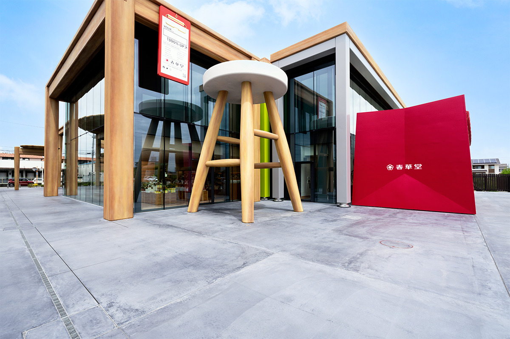
Под одной крышей здесь собраны офис Shunkado, отделение местного кредитного кооператива, обновлённый фирменный магазин SWEETS BANK SHOP, кафе-пекарня TORA to FUSEN и общественное пространство «Цуно-га-тацу». Всё, вплоть до мелочей интерьера, подчинено одному сюжету: из этого места люди должны уходить с улыбкой и запомнить его надолго.
Архитектура
Мир, где вы ростом с ладонь
Главным для авторов проекта было показать всем зданием благодарность компании своим покупателям и её связь с ними. Поэтому архитектуру, отделку и мебель придумывали вместе, как одну историю. Раз тема это памятные даты, то самым ясным её символом стал огромный обеденный стол, и уже от него пошёл облик всего здания.
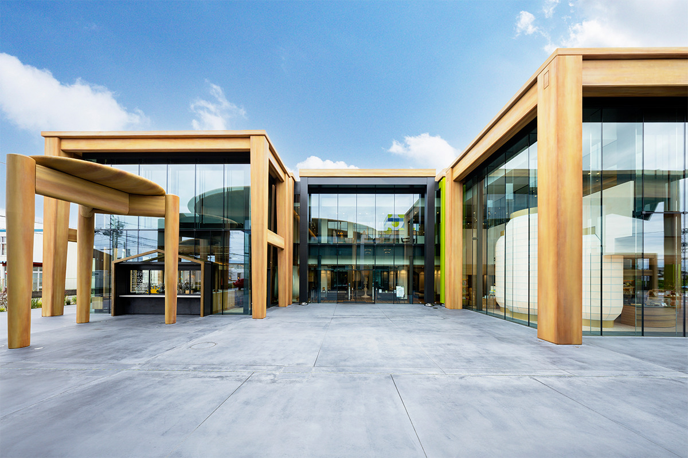
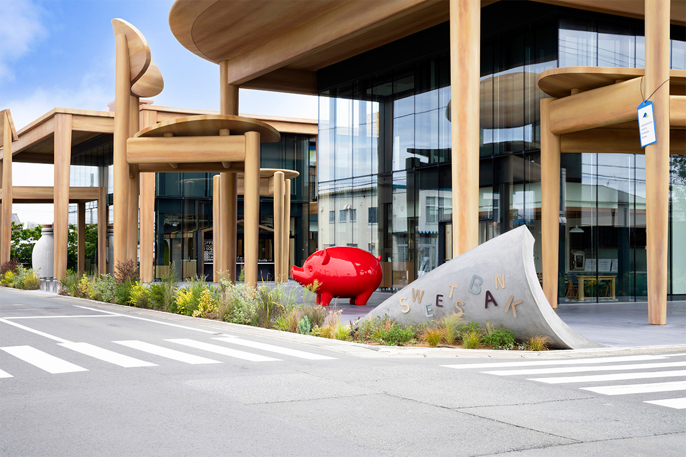
Вокруг стола расставлены предметы, которые естественно смотрятся рядом с ним и сразу подсказывают, что находится внутри: кафе, магазин или банк. Это не просто украшения. Каждый предмет работает как вывеска и становится символом своего уголка.
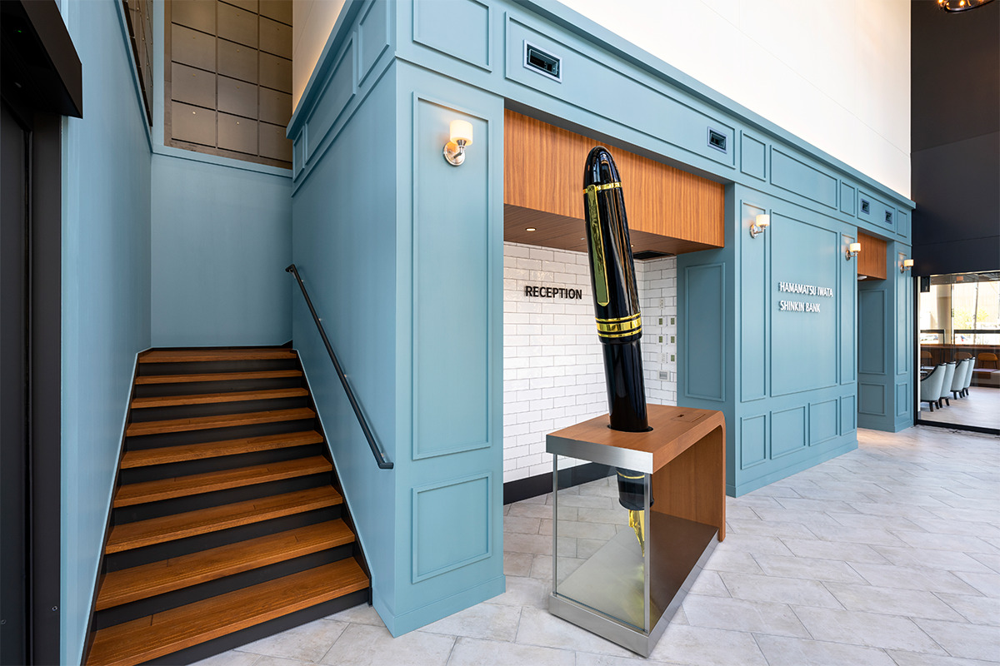
Северный корпус Shunkado напоминает кондитерскую мастерскую. Стены с фактурой штукатурки похожи на муку, деревянный пол первого этажа на раскатанное слоёное тесто, а решётка у входа в офис на его слои.
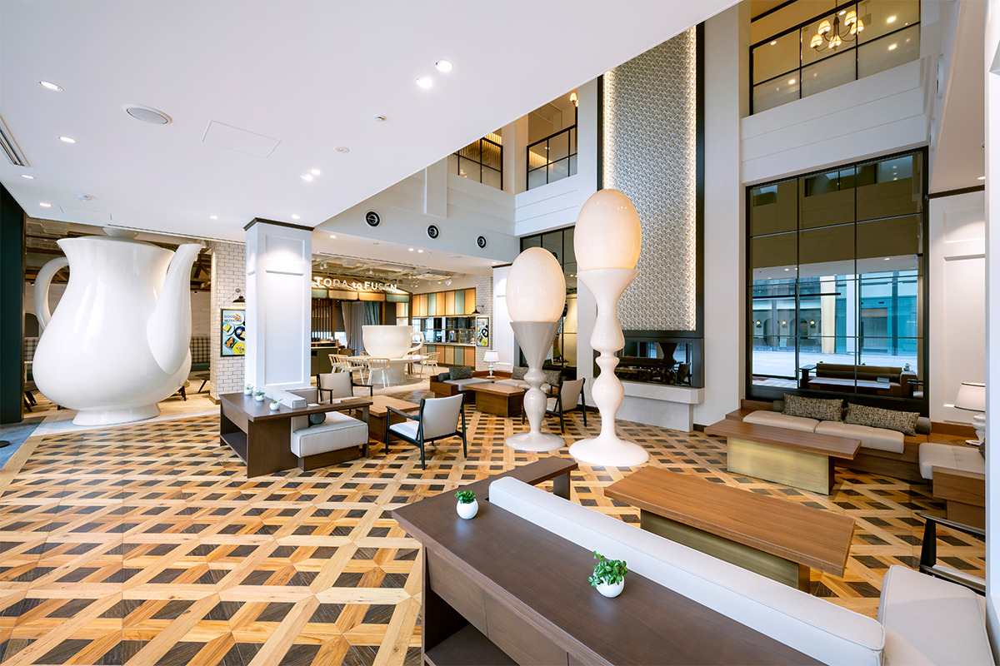
В южном корпусе работает кредитный кооператив, и здесь хотели уйти от привычного строгого облика банка. Зал получился светлым и уютным, а акцентами стали предметы из домашнего кабинета вроде копилки-свиньи и перьевой ручки: они подходят к теме банка и не дают интерьеру стать скучным.
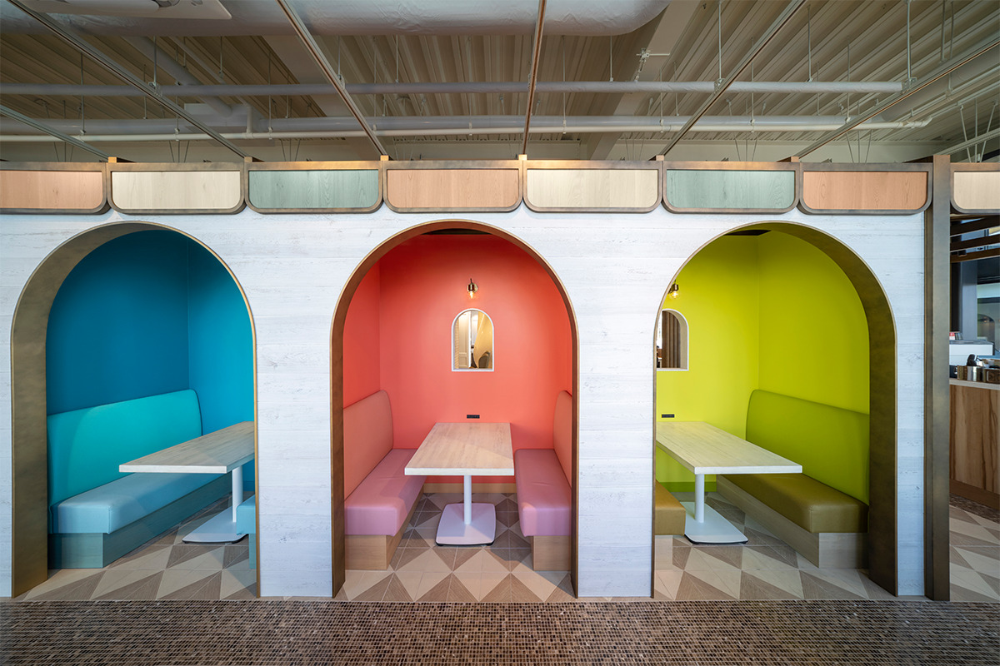
Магазин
SWEETS BANK SHOP: подарки из Хамамацу
На полках фирменного магазина стоят оригинальные сладости, а в витринах лежат разноцветные пирожные. Даже знакомое «Унаги-пай» здесь выглядит иначе: набор печенья продают в упаковке, придуманной только для SWEETS BANK. На ней нарисованы крошечные кондитеры, усердно пекущие печенье, и воздушные змеи с праздника Хамамацу мацури.
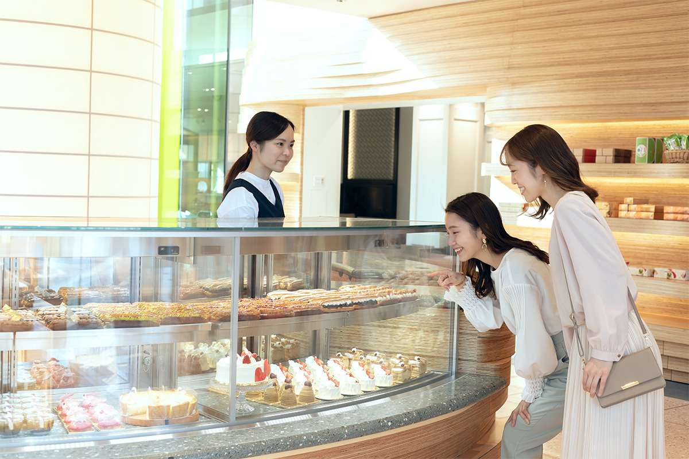
А огромные предметы самого комплекса здесь можно унести с собой: их повторяют в миниатюре вагаси, нежные японские сладости размером с ладонь.
Кафе
TORA to FUSEN: бриошь и овощи Энсю
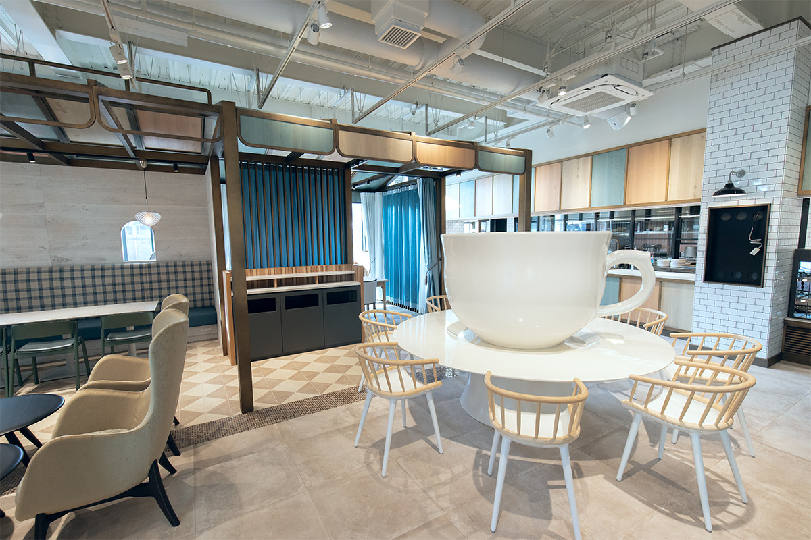
Пекари кафе каждый день пекут фирменный хлеб «Жёлтая бриошь-горка Торанды», а в меню есть и сладости, и полноценные блюда. Повара по-своему обыгрывают то, из чего Shunkado делает свои сладости: бриошь, классический пудинг компании, выдержанное местное мисо из булочек «Инака мисо-ман». На обед подают деликатесы из овощей Энсю, как называют запад префектуры, и всё меню строится на двух идеях: свежесть и сюрприз.
«Жёлтая бриошь-горка Торанды»
Бриошь-горку с большим количеством масла и яиц пекут прямо в кафе. Хлеб получается насыщенным и подходит как к сладкому, так и к обеду: утром из него делают завтрак, днём обед, а потом десерт. Целые буханки продают и навынос, но их число ограничено.
Пространство
«Цуно-га-тацу»: место для идей
Интересные люди, вещи и знания рассыпаны по всему Хамамацу. Пространство «Цуно-га-тацу» задумали, чтобы соединять их поверх любых границ и вместе переживать трудные времена, оставаясь незаметной опорой. Главная мысль: исполнить желание каждого отдельного человека, поддержать его замысел и помочь городу сделать то, что ему давно хотелось попробовать.
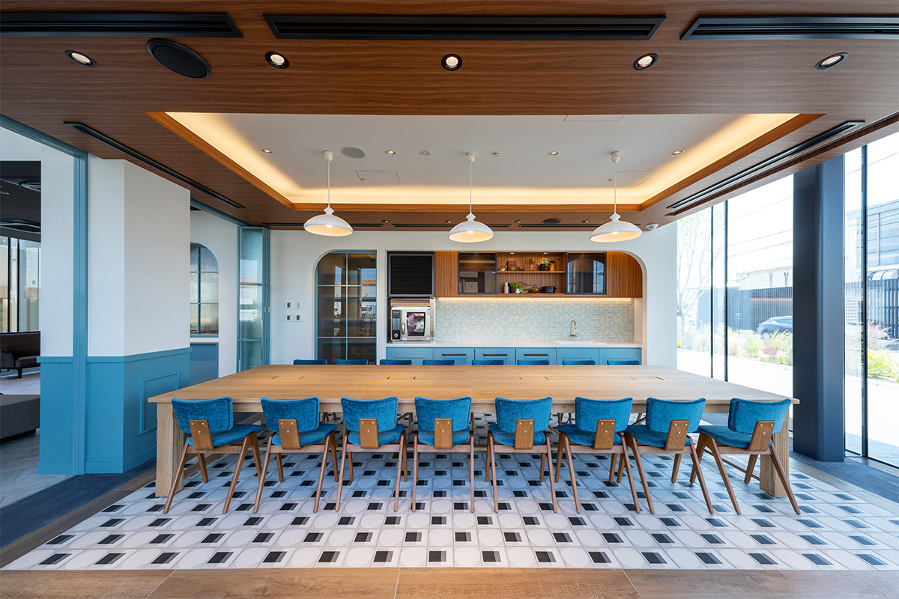
Откуда название
«Цуно-га-тацу» по-японски значит «встают рожки». Так кондитеры говорят о взбитых белках или сливках, которые держат острые пики: это признак идеальной консистенции. Но рога есть и у животных, и они показывают силу и характер своего хозяина. Название соединяет оба смысла: гибкость, нужную людям для общения, и возможности, которые есть в каждом.
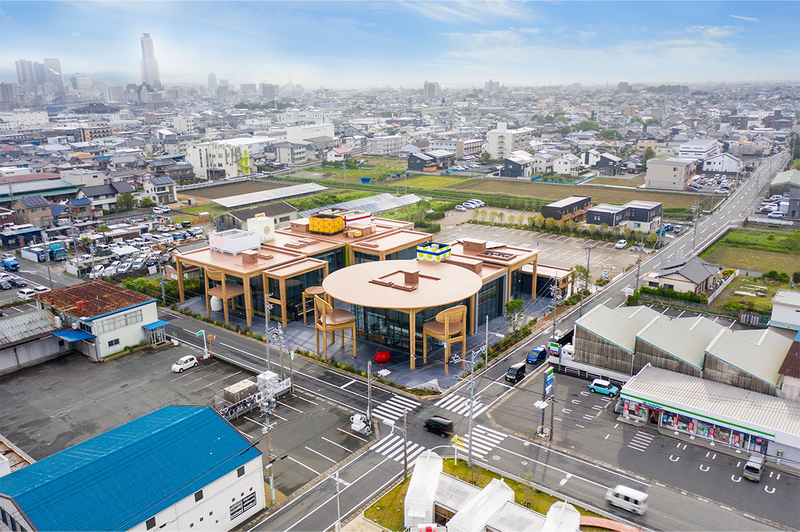
Здесь можно попробовать сладости, сделать снимки рядом с великанской мебелью и провести несколько весёлых часов в мире, который совсем не похож на повседневный.
SWEETS BANK
- Адрес
- префектура Сидзуока, Хамамацу, Тюо-ку, Канда-тё, 553
- Телефон
- +81 53-441-3340
- Часы работы
- 9:30–18:00
- Как добраться
- на машине, бесплатная парковка на 70 мест
Фото: Тайти Мисоноо, Shunkado.